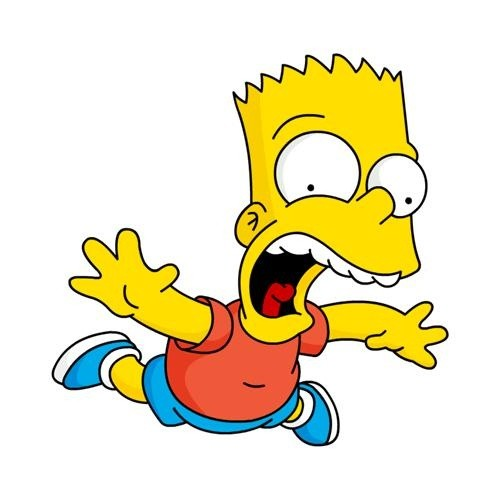

Семья Си́мпсонов — вымышленная семья из американского мультсериала «Симпсоны». Основной костяк семьи Симпсонов включает в себя Гомера, Мардж, Барта, Лизу и Мэгги. Они проживают в доме номер 742 по Вечнозелёной Аллее в вымышленном городе Спрингфилде, США; их телефонный номер (939) 555-0113.

Гомер воплощает в себе несколько американских стереотипов рабочего класса: он является неопрятным, некомпетентным, неуклюжим, ленивым, сильно пьющим и невежественным, страдает избыточным весом, однако по сути он также порядочный человек, сильно преданный своей семье.
Бартоломью Джо-Джо «Барт» Симпсон (англ. Bartholomew Jo-Jo «Bart» Simpson) — герой мультипликационного сериала «Симпсоны». Наряду с Гомером, один из наиболее известных персонажей шоу. В списке пятидесяти лучших мультипликационных героев в истории по версии журнала TV Guide занимает 11-ю строчку совместно со своей сестрой Лизой. Барт впервые появился на экране 19 апреля 1987 года в короткометражной серии «Good Night». Получил своё второе имя в честь своего двоюродного деда и дяди Мардж.
Лі́са Марі Сімпсон (англ. Lisa Marie Simpson) — персонажка анімаційного телесеріалу «Сімпсони», озвучена Ярдлі Сміт. Автор серіалу Мет Ґрейнінґ назвав героїню іменем сестри. Ліса — надзвичайно розумна восьмирічна дівчинка, одина з найрозумніших у серіалі (за даними різних серій її IQ становить 156 чи 159). Феміністка. Грає на саксофоні. Полюбляє дивитися мультфільм «Чух і Сверблячка» разом з сім'єю.